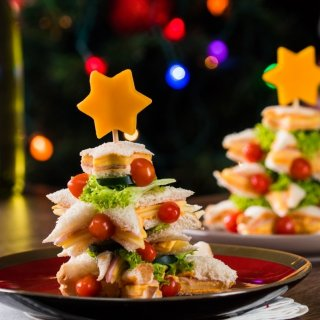
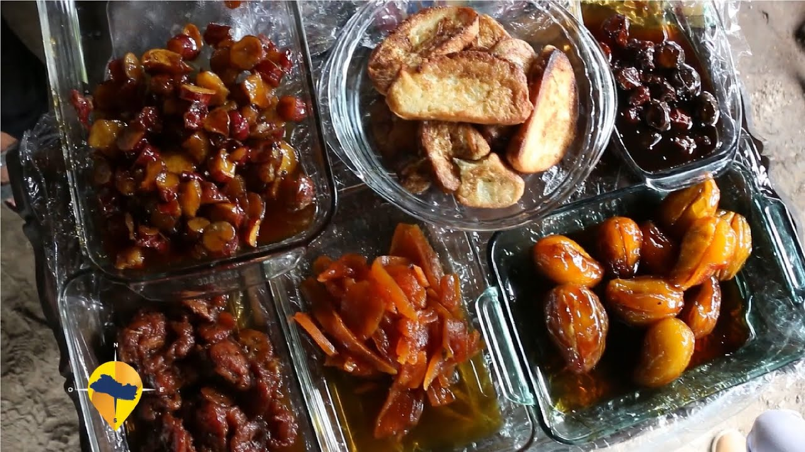
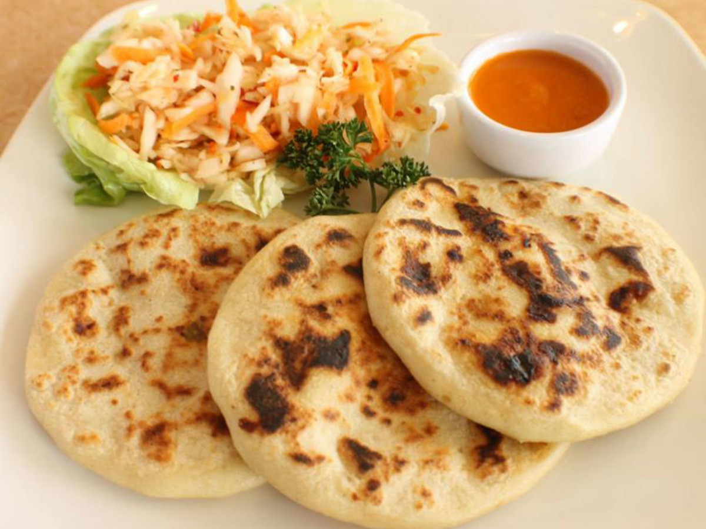

Atol Piñuela.
El sabroso y tradicional Atol de Piñuela, es otra de las ricas variedades de atoles que tenemos.
Ver más

Atol de Elote.
El atol de elote es una deliciosa bebida dulce hecha de maíz.
Ver más

Atol de maíz tostado.
El atol de maíz tostado es muy rico y es uno de los atoles mas deseados por todos los salvadoreños.
Ver más